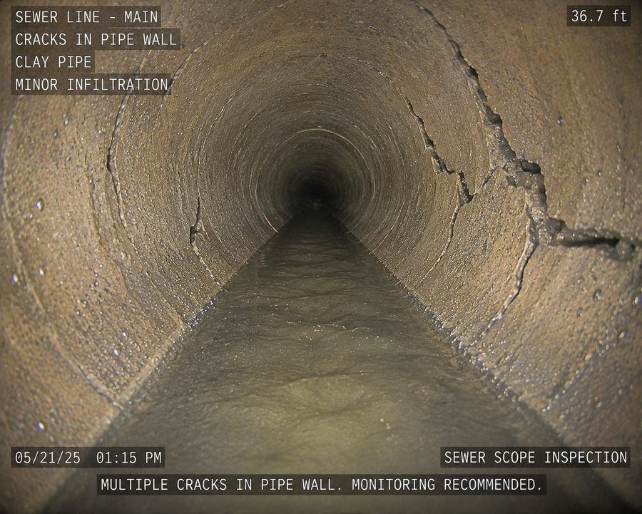
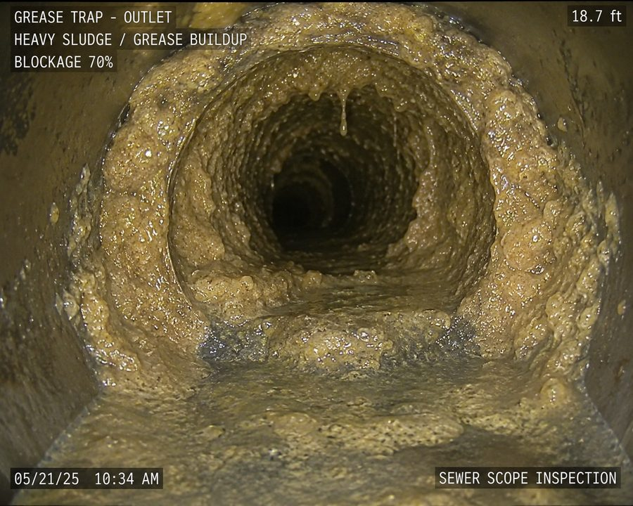
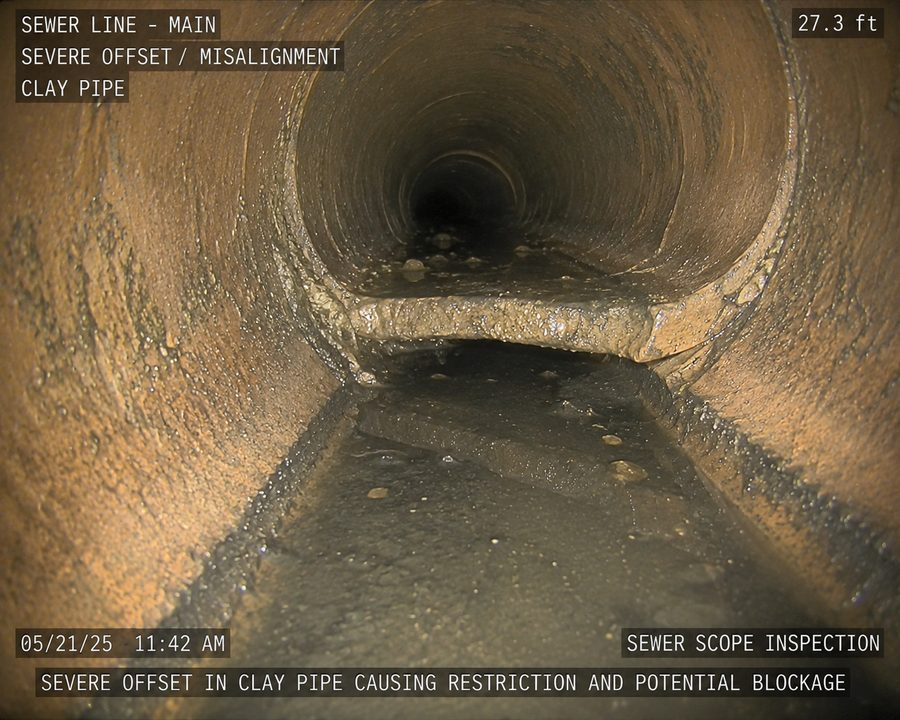
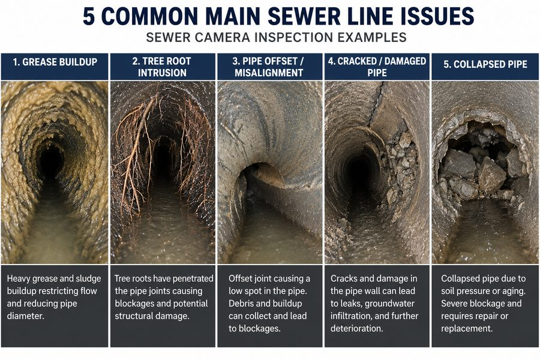
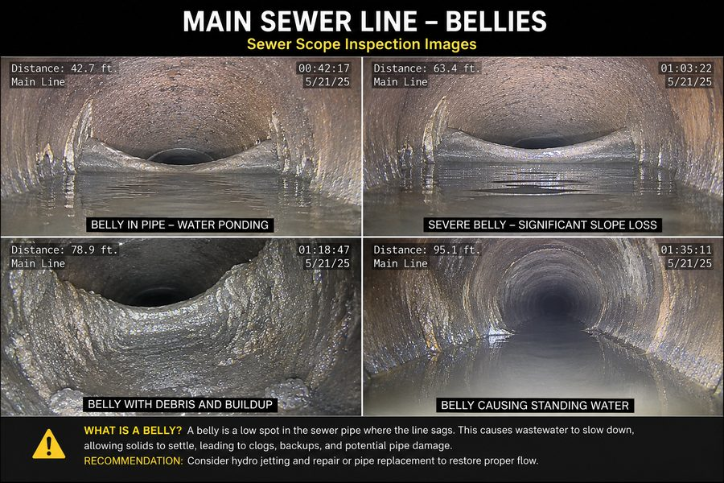

A sewer camera inspection gives you certainty. Instead of guessing why a drain keeps backing up, we insert a high-definition waterproof camera directly into the pipe and show you exactly what is happening inside — on a monitor, in real time. Blockages, cracks, root intrusions, offset joints, collapsed sections, and buildup are all captured and recorded.
At Jet Force, camera inspection is both a diagnostic tool and a verification step. We scope lines before recommending repairs so we only suggest work that is actually needed. We also scope after cleaning to confirm the job was done right. If you are buying a home, planning a renovation, or dealing with chronic drain issues on an older property, a camera inspection is the smartest first investment you can make.





How Sewer Scope Inspection Works
Our technician accesses the line through a cleanout, floor drain, or toilet and feeds a flexible rod with an HD camera head into the pipe. The camera transmits live color video to a monitor that both you and our technician can review in real time.
As the camera travels through the line, our technician narrates what is visible and identifies any problem areas — noting their location, depth, and condition. The full inspection is recorded to video. You receive a written report with all findings, our professional assessment, and recommended next steps. We do not recommend work unless we can show you on camera exactly why it is needed.
Signs You Need This Service
- Recurring slow drains or backups with no obvious cause
- Purchasing a home built before 1985 with unknown pipe history
- Planning a major renovation that involves plumbing
- Sewage odors in the yard, basement, or crawl space
- Unusually lush or wet patches in the yard above the sewer line
- Multiple drains backing up at the same time throughout the property
Why Choose Jet Force
Most plumbing companies want to sell you a repair. We want to give you the truth first. Our camera inspections are thorough, clearly documented, and come with no pressure to purchase anything else. If the pipe is fine, we will tell you it is fine. If there is a problem, we will show it to you on video and explain your options in plain language.
We combine camera inspection with all of our underground services — hydro jetting, sewer repair, and leak detection — so you get a complete, informed picture before any decision is made. No down payment is ever required before work begins.